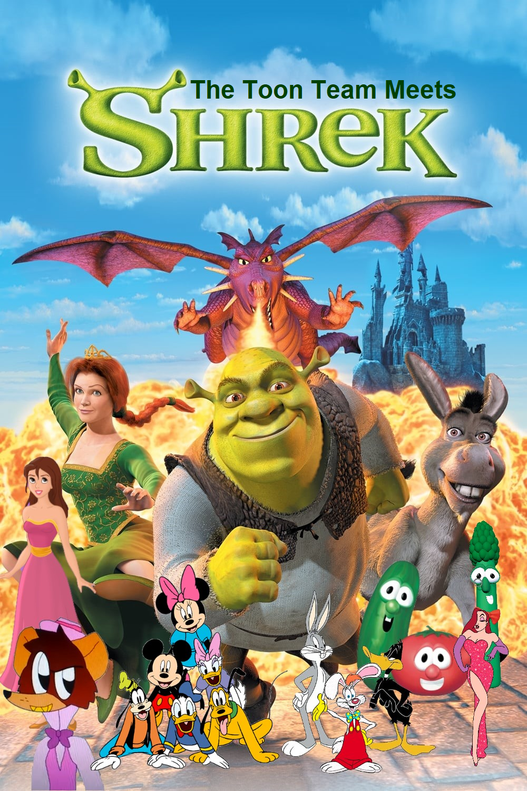

Mój ulubiony artysta to Lil Uzi Vert
Mój ulubiony wykonawca muzyczny to Sting. Sting naprawdę nazywa się Gordon Matthew Sumner i urodził się w 1951 roku w Newcastle.
Dorastał w zwyczajnej, angielskiej rodzinie, która utrzymywała się z fizycznej pracy obojga rodziców.
Jego ojciec był inżynierem, choć pracował jako mleczarz, a matka fryzjerką.
Gordon dorastał z młodszym rodzeństwem - bratem Philipem i dwoma siostrami Angelą oraz Anitą.
Mój ulubiony film to shrek

Moje ulubione książki to: